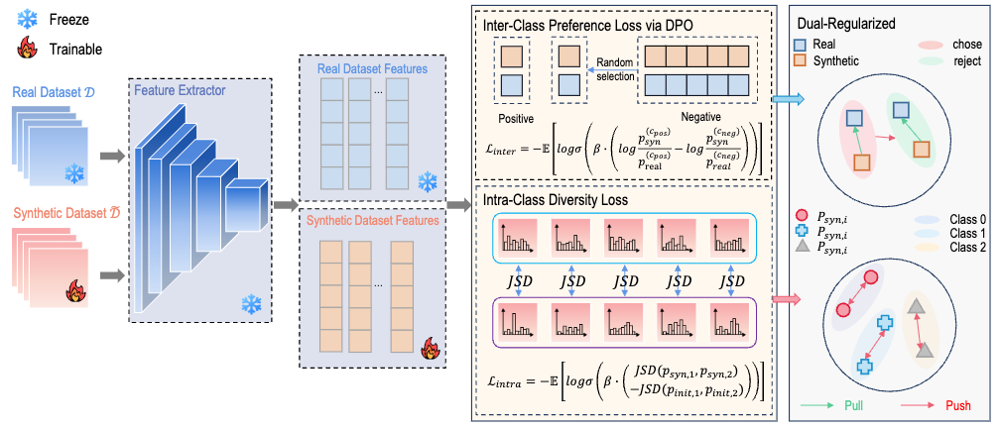
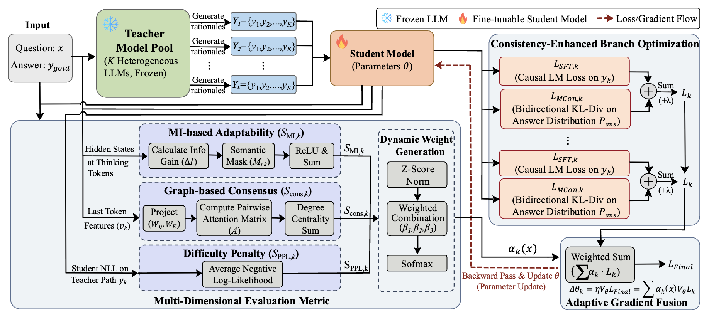
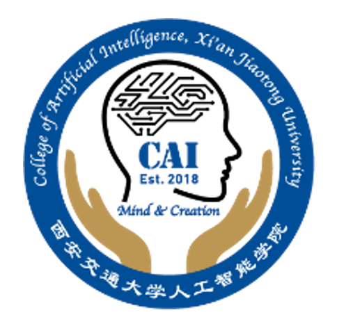

|
Jiangcheng Song (宋蒋成) I am an incoming Ph.D. student (starting Fall 2026) at the Institute of Artificial Intelligence and Robotics (IAIR), Xi'an Jiaotong University, advised by Prof. Nanning Zheng. My research interests include Knowledge Distillation, Large Language Models, Efficient Inference, and Dataset Condensation. |
{kind=link}
Publications
I am interested in efficient deep learning, knowledge distillation, and large language model
optimization. Representative papers are highlighted.
|
|

|
DR-DPO: Dual-Regularized DPO for Efficient Dataset Condensation
Haiduo Huang*, Jiangcheng Song*, Yadong Zhang*, Guansu Wang, Pengju Ren * Three authors contributed equally Under Review A dual-regularized framework that recasts dataset condensation as preference optimization. An inter-class DPO loss maximizes class separability while an intra-class Jensen-Shannon term preserves within-class statistics. |

|
SelecTKD: Selective Token-Weighted Knowledge Distillation for LLMs
Haiduo Huang*, Jiangcheng Song*, Yadong Zhang*, Pengju Ren * Three authors contributed equally Under Review arXiv A selective token-weighted knowledge distillation method for large language models that adaptively weights tokens during distillation for improved efficiency and performance. |

|
FastEagle: Cascaded Drafting for Accelerating Speculative Decoding
Haiduo Huang*, Jiangcheng Song*, Wenzhe Zhao, Pengju Ren * Three authors contributed equally ICASSP, 2026 arXiv A cascaded drafting approach for accelerating speculative decoding in large language models, enabling faster inference without sacrificing quality. |

|
PPDD: A Unified Push-Pull Adversarial Objective in Feature and Logit Spaces
for Dataset Distillation
Haiduo Huang*, Yadong Zhang*, Jiangcheng Song*, Wenzhe Zhao, Pengju Ren * Three authors contributed equally ICASSP, 2026 A unified push-pull adversarial objective that operates in both feature and logit spaces for effective dataset distillation. |

|
DeepKD: A Deeply Decoupled and Denoised Knowledge Distillation
Trainer
Haiduo Huang*, Jiangcheng Song*, Yadong Zhang*, Pengju Ren * Three authors contributed equally NeurIPS, 2025 arXiv / code A knowledge distillation framework that deeply decouples and denoises the distillation process for improved training stability and performance. |
Collaboration Publications |
|

|
"The Whole Is Greater Than the Sum of Its Parts": A Compatibility-Aware
Multi-Teacher CoT Distillation Framework
Jiazhen Cui, Jiahao Guo, Jie Zhou, Rui Yang, Jian Lu, Jun Xu, Jiangcheng Song, Bing Zhao, Pengju Ren Under Review arXiv A compatibility-aware multi-teacher chain-of-thought distillation framework that leverages the complementary strengths of multiple teacher models. |

|
MIND: From Passive Mimicry to Active Reasoning through Capability-Aware
Multi-Perspective CoT Distillation
Jiazhen Cui, Jiahao Guo, Jie Zhou, Rui Yang, Jian Lu, Jun Xu, Jiangcheng Song, Bing Zhao, Pengju Ren Under Review arXiv A capability-aware multi-perspective chain-of-thought distillation method that transforms passive mimicry into active reasoning. |
Education |
|
Xi'an Jiaotong University
State Key Laboratory of Human-Machine Hybrid Augmented Intelligence Institute of Artificial Intelligence and Robotics Research Intern advisor: Professor Pengju Ren 9/2024 - 2/2026 |
|
|  |
Xi'an Jiaotong University
College of artificial intelligence State Key Laboratory of Human-Machine Hybrid Augmented Intelligence Institute of Artificial Intelligence and Robotics PhD Student advisor: Professor Nanning Zheng 9/2026 - |